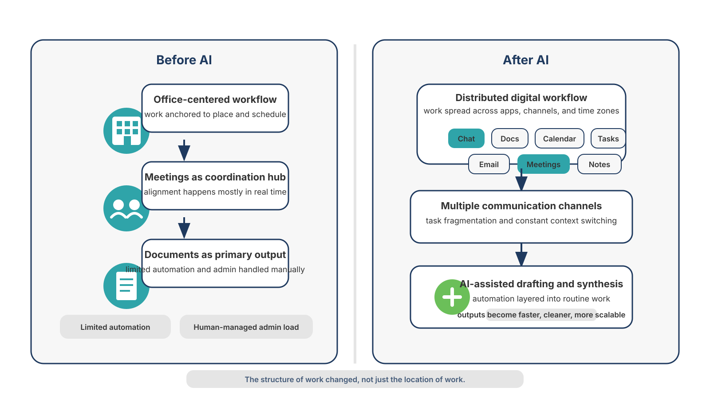
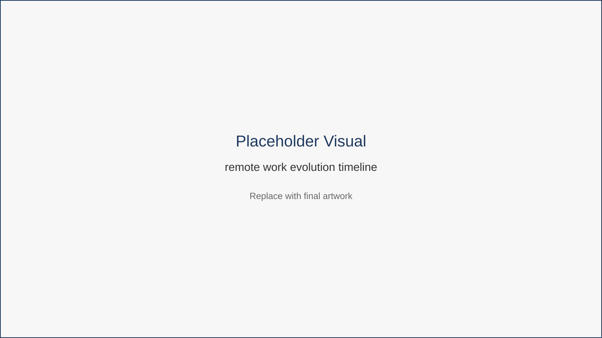

The New Reality of Remote Work
In just a few short years, work has undergone a profound shift. Millions of professionals who once commuted daily now sign in from kitchens, co-working hubs, home offices, or temporary workspaces scattered across the world.
Remote work, once considered a niche perk, has become a mainstream model of employment and entrepreneurship.
At the same time, artificial intelligence has moved from experimental technology to everyday utility. Tools capable of drafting documents, summarizing meetings, generating designs, and organizing information are now embedded across the modern software landscape.
These two shifts — remote work and practical AI — are converging. For remote professionals, their intersection is not merely interesting.
It is increasingly essential.
From Remote by Necessity to Remote by Design
During the pandemic years, remote work spread rapidly out of necessity. Organizations improvised digital workflows overnight, relying heavily on video meetings, chat platforms, and cloud documents to stay connected.
For many workers the experience brought both freedom and friction.
Freedom from commuting.
Freedom to work from different locations.
Freedom to design a more flexible life.
But also new challenges:
- constant digital communication
- blurred work-life boundaries
- fragmented collaboration
- rising expectations for responsiveness
Now, remote work is becoming intentional rather than temporary. Companies are designing distributed teams deliberately. Many professionals are choosing remote work as a long-term career path.
But as remote work matures, new pressures emerge.
Three Realities of Modern Remote Work
Global competition
Remote opportunities are no longer limited to local talent. Employers and clients can hire from anywhere.
Faster expectations
Clients expect quicker responses, faster delivery, and polished outputs.
Greater complexity
Instead of working in one physical space, remote professionals coordinate across many apps, tools, and communication channels.
This complexity introduces a deeper issue that many workers feel but rarely articulate clearly.
To understand the shift clearly, compare how work functioned before AI assistance with how modern remote workflows operate today.

This diagram highlights the structural shift in knowledge work. Traditional office workflows moved in relatively linear steps—from meetings to documents to final deliverables. Modern remote work distributes these activities across many apps and channels. AI introduces a third layer that helps reconnect fragmented tasks into more efficient workflows.
Remote work did not emerge overnight. It evolved through several distinct phases of technology and workplace culture.

This timeline illustrates how remote work evolved from occasional telecommuting to fully distributed digital work environments. The most recent phase introduces AI as a productivity layer within digital workflows, enabling professionals to complete tasks faster and manage complexity more effectively.
Example Based on Common Remote Work Situations
Alex is a remote consultant managing multiple clients across different time zones. His day includes Slack messages, Zoom calls, shared documents, proposal writing, and ongoing research.
Before adopting AI assistance, Alex spent much of his time switching between tasks rather than completing them.
After integrating AI tools thoughtfully, he began:
- drafting first-pass documents faster
- summarizing meetings automatically
- organizing tasks with AI-assisted planning
The work itself did not change dramatically.
But his capacity increased.
Key Insight
Remote work did not simply move work online.
It fragmented work across tools, channels, and responsibilities.
And that fragmentation creates a hidden productivity challenge.
Chapter Takeaways
- Remote work has shifted from temporary adaptation to long-term operating model.
- The digital environment introduces new complexity and fragmentation.
- AI is emerging as a practical assistant across many professional tasks.
- The real opportunity is not automation alone but better ways of working.
Action Plan
Try a simple experiment today.
Open your preferred AI assistant and ask:
“What are five ways I could save time this week in my role as [your job]?”
Notice which ideas feel realistic. Over the course of this book you will learn how to turn those ideas into structured workflows.
What’s Next
Remote work offers freedom, but it also introduces a hidden problem.
Many professionals feel constantly busy yet struggle to make meaningful progress. To understand why, we need to examine the productivity problem at the heart of modern remote work.